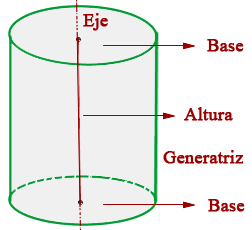
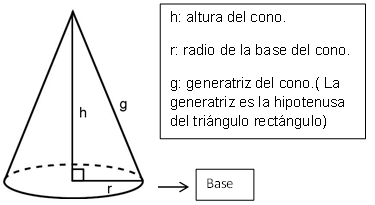
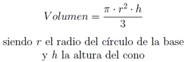
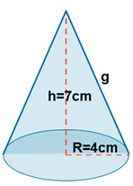

Definimos el cilindro como el cuerpo engendrado por un rectángulo que gira alrededor de sus lados. Los elementos notables del cilindro son:

El eje es el lado fijo del cual gira el rectángulo.
La generatriz es el lado opuesto al eje, y es el lado que engendra el cilindro.
Las bases son los círculos que engendran los lados perpendiculares al eje.
La altura es la distancia entre las dos bases, esta distancia es igual a la generatriz.
Ahora, el volumen de todo cilindro es:
Area de la base por h.
El volumen es “el área de la base del cilindro, por la altura del mismo”
Ejemplo: Calcular el volumen del siguiente cilindro.
Formula: Area de la base por altura
(3.14)r^2 x h
(3.14)8^2 x 15= 3.14 x 64 x 15
200.96 x 15= 3014.4 cm^3
Conos
Un cono es una figura tridimensional con una base circular. Una superficie curvada conecta la base y el vértice.

El volumen de un sólido de 3 dimensiones es la cantidad de espacio que ocupa. Las unidades de volumen están dadas en unidades cúbicas (pulg 3 , pies 3 , cm 3 , m 3 , etcétera). Asegúrese de que todas las medidas estén en las mismas unidades antes de calcular el volumen.
El volumen de todo cono es:

Ejemplo: encontrar el volumen del siguiente cono:

Volumen= 3.14 x r^2 x h/3 3.14 x 4^2 x 7/3
3.14 x 16 x 7/3= 50.24 x 7/3 = 351.68/3= 117.2267cm^3
Autor: José Elías Trad López.